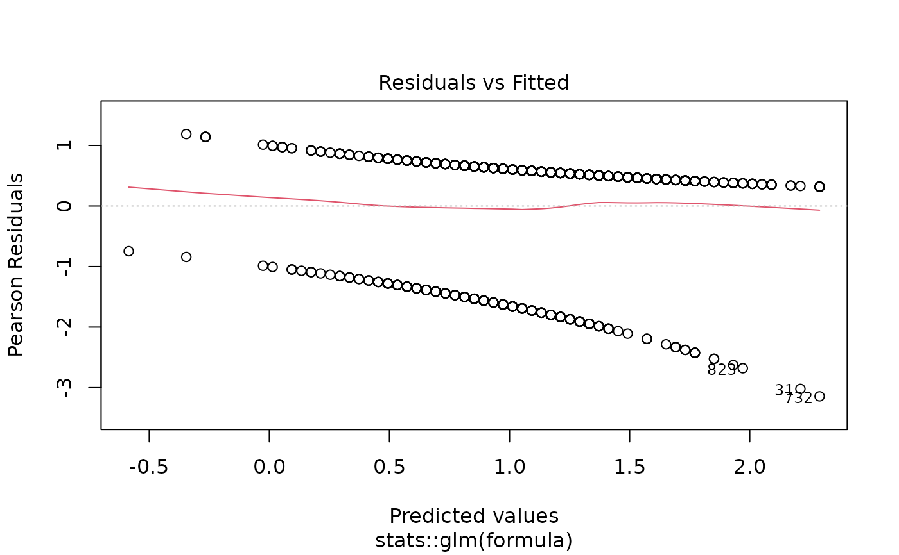
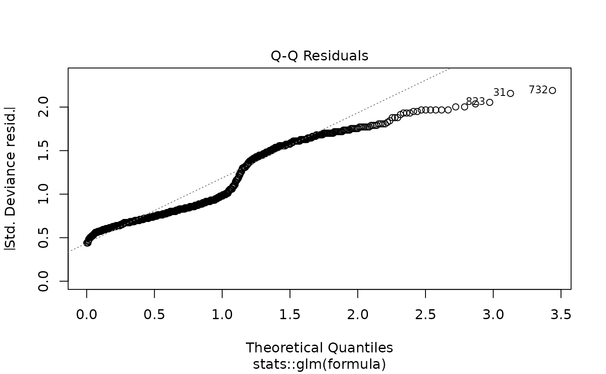
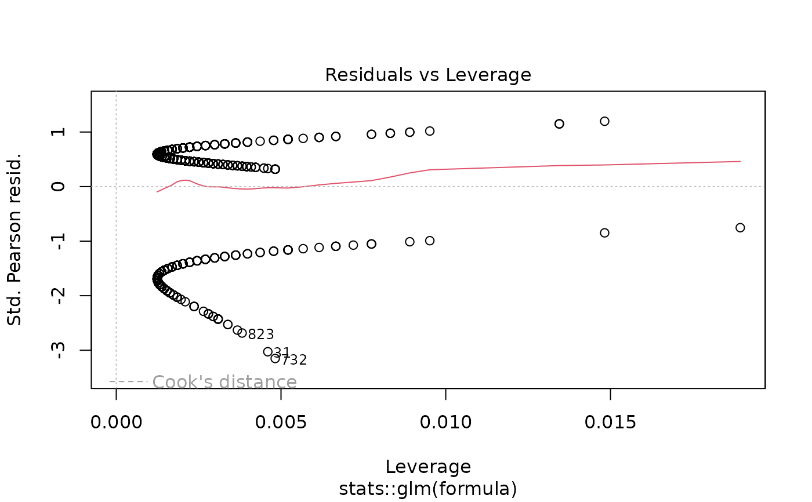

Performs comprehensive univariable (unadjusted) regression analyses by fitting separate models for each predictor against a single outcome. This function is designed for initial variable screening, hypothesis generation, and understanding crude associations before multivariable modeling. Returns publication-ready formatted results with optional p-value filtering.
uniscreen(
data,
outcome,
predictors,
model_type = "glm",
family = "binomial",
random = NULL,
p_threshold = 1,
conf_level = 0.95,
reference_rows = TRUE,
show_n = TRUE,
show_events = TRUE,
digits = 2,
p_digits = 3,
labels = NULL,
keep_models = FALSE,
exponentiate = NULL,
parallel = TRUE,
n_cores = NULL,
...
)Arguments
- data
A data.frame or data.table containing the analysis dataset. The function automatically converts data.frames to data.tables for efficient processing.
- outcome
Character string specifying the outcome variable name. For survival analysis, use
Surv()syntax from the survival package (e.g.,"Surv(time, status)"or"Surv(os_months, os_status)").- predictors
Character vector of predictor variable names to screen. Each predictor is tested independently in its own univariable model. Can include continuous, categorical (factor), or binary variables.
- model_type
Character string specifying the type of regression model to fit. Options include:
"glm"- Generalized linear model [default]"lm"- Linear regression"coxph"- Cox proportional hazards (survival analysis)"clogit"- Conditional logistic regression"glmer"- Generalized linear mixed-effects model (requiresrandom)"lmer"- Linear mixed-effects model (requiresrandom)"coxme"- Cox mixed-effects model (requiresrandom)
- family
For GLM and GLMER models, the error distribution and link function. Common options include:
"binomial"- Logistic regression for binary outcomes [default]"poisson"- Poisson regression for count data"gaussian"- Normal linear regression via GLM"Gamma"- Gamma regression for positive continuous data
See
familyfor all options. Ignored for non-GLM/GLMER models.- random
Character string specifying the random effects formula for mixed-effects models (
glmer,lmer,coxme). Use standard lme4/coxme syntax, e.g.,"(1|site)"for random intercepts by site,"(1|site/patient)"for nested random effects. Required whenmodel_typeis a mixed-effects model type. Default isNULL.- p_threshold
Numeric value between 0 and 1 specifying a p-value threshold for filtering results. Only predictors with p-value ≤ threshold in their univariable model are included in the output. Default is 1 (no filtering, all predictors returned). Common values: 0.05, 0.10, 0.20 for screening.
- conf_level
Numeric confidence level for confidence intervals. Must be between 0 and 1. Default is 0.95 (95% confidence intervals).
- reference_rows
Logical. If
TRUE, adds rows for reference categories of factor variables with baseline values (OR/HR/RR = 1, coefficient = 0). Makes tables complete and easier to interpret. Default isTRUE.- show_n
Logical. If
TRUE, includes the sample size column in the output table. Default isTRUE.- show_events
Logical. If
TRUE, includes the events column in the output table (relevant for survival and logistic regression). Default isTRUE.- digits
Integer specifying the number of decimal places for effect estimates (OR, HR, RR, coefficients). Default is 2.
- p_digits
Integer specifying the number of decimal places for p-values. P-values smaller than
10^(-p_digits)are displayed as "< 0.001", "< 0.01", etc. Default is 3.- labels
Named character vector or list providing custom display labels for variables. Names should match predictor names, values are the display labels. Predictors not in
labelsuse their original names. Default isNULL.- keep_models
Logical. If
TRUE, stores all fitted model objects in the output as an attribute. This allows access to models for diagnostics, predictions, or further analysis, but can consume significant memory for large datasets or many predictors. Models are accessible viaattr(result, "models"). Default isFALSE.- exponentiate
Logical. Whether to exponentiate coefficients (display OR/HR/RR instead of log odds/log hazards). Default is
NULL, which automatically exponentiates for logistic, Poisson, and Cox models, and displays raw coefficients for linear models and other GLM families. Set toTRUEto force exponentiation orFALSEto force coefficients.- ...
Additional arguments passed to the underlying model fitting functions (
glm,lm,coxph, etc.). Common options includeweights,subset,na.action, and model-specific control parameters.
Value
A data.table with S3 class "uniscreen_result" containing formatted
univariable screening results. The table structure includes:
- Variable
Character. Predictor name or custom label (from
labels)- Group
Character. For factor variables: category level. For continuous variables: typically empty or descriptive statistic label
- n
Integer. Sample size used in the model (if
show_n = TRUE)- n_group
Integer. Sample size for this specific factor level (factor variables only)
- events
Integer. Total number of events in the model for survival or logistic regression (if
show_events = TRUE)- events_group
Integer. Number of events for this specific factor level (factor variables only)
- OR/HR/RR/Coefficient (95% CI)
Character. Formatted effect estimate with confidence interval. Column name depends on model type: "OR (95% CI)" for logistic, "HR (95% CI)" for Cox, "RR (95% CI)" for Poisson, "Coefficient (95% CI)" for linear models
- p-value
Character. Formatted p-value from the Wald test
The returned object includes the following attributes accessible via attr():
- raw_data
data.table. Unformatted numeric results with separate columns for coefficients, standard errors, confidence interval bounds, etc. Suitable for further statistical analysis or custom formatting
- models
list (if
keep_models = TRUE). Named list of fitted model objects, with predictor names as list names. Access specific models viaattr(result, "models")[["predictor_name"]]- outcome
Character. The outcome variable name used
- model_type
Character. The regression model type used
- model_scope
Character. Always "Univariable" for screening results
- screening_type
Character. Always "univariable" to identify the analysis type
Details
Analysis Approach:
The function implements a comprehensive univariable screening workflow:
For each predictor in
predictors, fits a separate model:outcome ~ predictorExtracts coefficients, confidence intervals, and p-values from each model
Combines results into a single table for easy comparison
Optionally filters results based on
p_thresholdFormats output for publication with appropriate effect measures
Each predictor is tested independently - these are crude (unadjusted) associations that do not account for confounding or interaction effects.
When to Use Univariable Screening:
Initial variable selection: Identify predictors associated with the outcome before building multivariable models
Hypothesis generation: Explore potential associations in exploratory analyses
Understanding crude associations: Report unadjusted effects alongside adjusted estimates
Variable reduction: Use p-value thresholds (e.g., p < 0.20) to reduce the number of candidates for multivariable modeling
Checking multicollinearity: Compare univariable and multivariable effects to identify potential collinearity
Factor Variables and Reference Categories:
When reference_rows = TRUE (default):
Reference categories are explicitly shown with OR/HR/RR = 1.00
The reference row displays "(Reference)" instead of an effect estimate
P-values are shown only for non-reference categories
Group-specific sample sizes and event counts are calculated
P-value Filtering:
The p_threshold parameter enables automatic filtering:
Only predictors with at least one significant term (p ≤ threshold) are retained
For factor variables, if any level is significant, all levels are kept
Common thresholds: 0.05 (strict), 0.10 (moderate), 0.20 (liberal screening)
When
keep_models = TRUE, non-significant models are also removed from the models list
Effect Measures by Model Type:
Logistic regression (
model_type = "glm",family = "binomial"): Odds ratios (OR)Cox regression (
model_type = "coxph"): Hazard ratios (HR)Poisson regression (
model_type = "glm",family = "poisson"): Rate/risk ratios (RR)Linear regression (
model_type = "lm"or GLM with identity link): Raw coefficient estimates
Memory Considerations:
When keep_models = FALSE (default), fitted models are discarded after
extracting results to conserve memory. Set keep_models = TRUE only when
you need:
Model diagnostic plots
Predictions from individual models
Additional model statistics not extracted by default
Further analysis of specific models
See also
Examples
# Load example data
data(clintrial)
data(clintrial_labels)
# Example 1: Basic logistic regression screening
screen1 <- uniscreen(
data = clintrial,
outcome = "os_status",
predictors = c("age", "sex", "bmi", "smoking", "hypertension"),
model_type = "glm",
family = "binomial"
)
print(screen1)
#>
#> Univariable Screening Results
#> Outcome: os_status
#> Model Type: Logistic
#> Predictors Screened: 5
#> Significant (p < 0.05): 2
#>
#> Variable Group n Events OR (95% CI) p-value
#> <char> <char> <char> <char> <char> <char>
#> 1: age - 850 628 1.04 (1.03-1.06) < 0.001
#> 2: sex Female 450 324 reference -
#> 3: Male 400 304 1.23 (0.90-1.68) 0.185
#> 4: bmi - 838 618 1.01 (0.98-1.05) 0.398
#> 5: smoking Never 336 239 reference -
#> 6: Current 185 147 1.57 (1.02-2.41) 0.039
#> 7: Former 312 229 1.12 (0.79-1.58) 0.520
#> 8: hypertension No 502 377 reference -
#> 9: Yes 333 240 0.86 (0.63-1.17) 0.330
# Example 2: With custom variable labels
screen2 <- uniscreen(
data = clintrial,
outcome = "os_status",
predictors = c("age", "sex", "bmi", "treatment"),
labels = clintrial_labels
)
print(screen2)
#>
#> Univariable Screening Results
#> Outcome: os_status
#> Model Type: Logistic
#> Predictors Screened: 4
#> Significant (p < 0.05): 2
#>
#> Variable Group n Events OR (95% CI) p-value
#> <char> <char> <char> <char> <char> <char>
#> 1: Age (years) - 850 628 1.04 (1.03-1.06) < 0.001
#> 2: Sex Female 450 324 reference -
#> 3: Male 400 304 1.23 (0.90-1.68) 0.185
#> 4: Body Mass Index (kg/m²) - 838 618 1.01 (0.98-1.05) 0.398
#> 5: Treatment Group Control 196 154 reference -
#> 6: Drug A 292 183 0.46 (0.30-0.69) < 0.001
#> 7: Drug B 362 291 1.12 (0.73-1.72) 0.611
# Example 3: Filter by p-value threshold
# Only keep predictors with p < 0.20 (common for screening)
screen3 <- uniscreen(
data = clintrial,
outcome = "os_status",
predictors = c("age", "sex", "bmi", "smoking", "hypertension",
"diabetes", "ecog", "stage"),
p_threshold = 0.20,
labels = clintrial_labels
)
print(screen3)
#>
#> Univariable Screening Results
#> Outcome: os_status
#> Model Type: Logistic
#> Predictors Screened: 5
#> Significant (p < 0.05): 4
#>
#> Variable Group n Events OR (95% CI) p-value
#> <char> <char> <char> <char> <char> <char>
#> 1: Age (years) - 850 628 1.04 (1.03-1.06) < 0.001
#> 2: Sex Female 450 324 reference -
#> 3: Male 400 304 1.23 (0.90-1.68) 0.185
#> 4: Smoking Status Never 336 239 reference -
#> 5: Current 185 147 1.57 (1.02-2.41) 0.039
#> 6: Former 312 229 1.12 (0.79-1.58) 0.520
#> 7: ECOG Performance Status 0 264 174 reference -
#> 8: 1 303 224 1.47 (1.02-2.10) 0.038
#> 9: 2 237 191 2.15 (1.42-3.24) < 0.001
#> 10: 3 38 34 4.40 (1.51-12.78) 0.007
#> 11: Disease Stage I 211 131 reference -
#> 12: II 264 184 1.40 (0.96-2.06) 0.082
#> 13: III 240 194 2.58 (1.68-3.94) < 0.001
#> 14: IV 132 117 4.76 (2.60-8.72) < 0.001
# Only significant predictors are shown
# Example 4: Cox proportional hazards screening
library(survival)
cox_screen <- uniscreen(
data = clintrial,
outcome = "Surv(os_months, os_status)",
predictors = c("age", "sex", "treatment", "stage", "grade"),
model_type = "coxph",
labels = clintrial_labels
)
print(cox_screen)
#>
#> Univariable Screening Results
#> Outcome: Surv(os_months, os_status)
#> Model Type: Cox PH
#> Predictors Screened: 5
#> Significant (p < 0.05): 5
#>
#> Variable Group n Events HR (95% CI)
#> <char> <char> <char> <char> <char>
#> 1: Age (years) - 850 628 1.03 (1.02-1.03)
#> 2: Sex Female 450 324 reference
#> 3: Male 400 304 1.18 (1.01-1.38)
#> 4: Treatment Group Control 196 154 reference
#> 5: Drug A 292 183 0.66 (0.53-0.82)
#> 6: Drug B 362 291 1.11 (0.91-1.35)
#> 7: Disease Stage I 211 131 reference
#> 8: II 264 184 1.26 (1.00-1.57)
#> 9: III 240 194 1.74 (1.39-2.17)
#> 10: IV 132 117 2.85 (2.22-3.67)
#> 11: Tumor Grade Well-differentiated 155 98 reference
#> 12: Moderately differentiated 414 310 1.40 (1.12-1.76)
#> 13: Poorly differentiated 271 212 1.63 (1.28-2.07)
#> p-value
#> <char>
#> 1: < 0.001
#> 2: -
#> 3: 0.038
#> 4: -
#> 5: < 0.001
#> 6: 0.300
#> 7: -
#> 8: 0.047
#> 9: < 0.001
#> 10: < 0.001
#> 11: -
#> 12: 0.003
#> 13: < 0.001
# Returns hazard ratios (HR) instead of odds ratios
# Example 5: Keep models for diagnostics
screen5 <- uniscreen(
data = clintrial,
outcome = "os_status",
predictors = c("age", "bmi", "creatinine"),
keep_models = TRUE
)
# Access stored models
models <- attr(screen5, "models")
summary(models[["age"]])
#>
#> Call:
#> stats::glm(formula = formula, family = family, data = data)
#>
#> Coefficients:
#> Estimate Std. Error z value Pr(>|z|)
#> (Intercept) -1.304330 0.409313 -3.187 0.00144 **
#> age 0.039944 0.006981 5.722 1.05e-08 ***
#> ---
#> Signif. codes: 0 ‘***’ 0.001 ‘**’ 0.01 ‘*’ 0.05 ‘.’ 0.1 ‘ ’ 1
#>
#> (Dispersion parameter for binomial family taken to be 1)
#>
#> Null deviance: 976.28 on 849 degrees of freedom
#> Residual deviance: 941.51 on 848 degrees of freedom
#> AIC: 945.51
#>
#> Number of Fisher Scoring iterations: 4
#>
plot(models[["age"]]) # Diagnostic plots




# Example 6: Linear regression screening
linear_screen <- uniscreen(
data = clintrial,
outcome = "bmi",
predictors = c("age", "sex", "smoking", "creatinine", "hemoglobin"),
model_type = "lm",
labels = clintrial_labels
)
print(linear_screen)
#>
#> Univariable Screening Results
#> Outcome: bmi
#> Model Type: Linear
#> Predictors Screened: 5
#> Significant (p < 0.05): 0
#>
#> Variable Group n Coefficient (95% CI) p-value
#> <char> <char> <char> <char> <char>
#> 1: Age (years) - 838 -0.02 (-0.05, 0.01) 0.134
#> 2: Sex Female 450 reference -
#> 3: Male 400 -0.38 (-1.05, 0.29) 0.263
#> 4: Smoking Status Never 336 reference -
#> 5: Current 185 0.36 (-0.52, 1.25) 0.424
#> 6: Former 312 0.27 (-0.49, 1.03) 0.486
#> 7: Baseline Creatinine (mg/dL) - 835 0.62 (-0.51, 1.75) 0.281
#> 8: Baseline Hemoglobin (g/dL) - 835 0.06 (-0.11, 0.24) 0.479
# Example 7: Poisson regression for count outcomes
poisson_screen <- uniscreen(
data = clintrial,
outcome = "los_days",
predictors = c("age", "sex", "treatment", "surgery", "stage"),
model_type = "glm",
family = "poisson",
labels = clintrial_labels
)
print(poisson_screen)
#>
#> Univariable Screening Results
#> Outcome: los_days
#> Model Type: Poisson
#> Predictors Screened: 5
#> Significant (p < 0.05): 4
#>
#> Variable Group n Events RR (95% CI) p-value
#> <char> <char> <char> <char> <char> <char>
#> 1: Age (years) - 830 16,646.0 1.01 (1.01-1.01) < 0.001
#> 2: Sex Female 450 8,686.2 reference -
#> 3: Male 400 7,959.9 1.04 (1.01-1.08) 0.006
#> 4: Treatment Group Control 196 3,671.5 reference -
#> 5: Drug A 292 5,296.3 0.96 (0.92-1.00) 0.069
#> 6: Drug B 362 7,678.3 1.15 (1.10-1.19) < 0.001
#> 7: Surgical Resection No 480 9,107.8 reference -
#> 8: Yes 370 7,538.3 1.03 (1.00-1.06) 0.066
#> 9: Disease Stage I 211 3,830.1 reference -
#> 10: II 264 5,100.3 1.06 (1.02-1.11) 0.006
#> 11: III 240 4,965.6 1.15 (1.10-1.20) < 0.001
#> 12: IV 132 2,699.9 1.16 (1.10-1.22) < 0.001
# Returns rate ratios (RR)
# Example 8: Hide reference rows for factor variables
screen8 <- uniscreen(
data = clintrial,
outcome = "os_status",
predictors = c("treatment", "stage", "grade"),
reference_rows = FALSE
)
print(screen8)
#>
#> Univariable Screening Results
#> Outcome: os_status
#> Model Type: Logistic
#> Predictors Screened: 3
#> Significant (p < 0.05): 3
#>
#> Variable Group n Events OR (95% CI) p-value
#> <char> <char> <char> <char> <char> <char>
#> 1: treatment Drug A 292 183 0.46 (0.30-0.69) < 0.001
#> 2: Drug B 362 291 1.12 (0.73-1.72) 0.611
#> 3: stage II 264 184 1.40 (0.96-2.06) 0.082
#> 4: III 240 194 2.58 (1.68-3.94) < 0.001
#> 5: IV 132 117 4.76 (2.60-8.72) < 0.001
#> 6: grade Moderately differentiated 414 310 1.73 (1.17-2.57) 0.006
#> 7: Poorly differentiated 271 212 2.09 (1.35-3.23) < 0.001
# Reference categories not shown
# Example 9: Customize decimal places
screen9 <- uniscreen(
data = clintrial,
outcome = "os_status",
predictors = c("age", "bmi", "creatinine"),
digits = 3, # 3 decimal places for OR
p_digits = 4 # 4 decimal places for p-values
)
print(screen9)
#>
#> Univariable Screening Results
#> Outcome: os_status
#> Model Type: Logistic
#> Predictors Screened: 3
#> Significant (p < 0.05): 1
#>
#> Variable Group n Events OR (95% CI) p-value
#> <char> <char> <char> <char> <char> <char>
#> 1: age - 850 628 1.041 (1.027-1.055) < 0.0001
#> 2: bmi - 838 618 1.014 (0.982-1.046) 0.3976
#> 3: creatinine - 840 619 0.832 (0.497-1.392) 0.4832
# Example 10: Hide sample size and event columns
screen10 <- uniscreen(
data = clintrial,
outcome = "os_status",
predictors = c("age", "sex", "bmi"),
show_n = FALSE,
show_events = FALSE
)
print(screen10)
#>
#> Univariable Screening Results
#> Outcome: os_status
#> Model Type: Logistic
#> Predictors Screened: 3
#> Significant (p < 0.05): 1
#>
#> Variable Group OR (95% CI) p-value
#> <char> <char> <char> <char>
#> 1: age - 1.04 (1.03-1.06) < 0.001
#> 2: sex Female reference -
#> 3: Male 1.23 (0.90-1.68) 0.185
#> 4: bmi - 1.01 (0.98-1.05) 0.398
# Example 11: Access raw numeric data
screen11 <- uniscreen(
data = clintrial,
outcome = "os_status",
predictors = c("age", "sex", "treatment")
)
raw_data <- attr(screen11, "raw_data")
print(raw_data)
#> model_scope model_type term n events coefficient se
#> <char> <char> <char> <int> <num> <num> <num>
#> 1: Univariable Logistic age 850 628 0.03994427 0.006980927
#> 2: Univariable Logistic sexFemale 450 324 0.00000000 NA
#> 3: Univariable Logistic sexMale 400 304 0.20821790 0.157254666
#> 4: Univariable Logistic treatmentControl 196 154 0.00000000 NA
#> 5: Univariable Logistic treatmentDrug A 292 183 -0.78114471 0.211994793
#> 6: Univariable Logistic treatmentDrug B 362 291 0.11136041 0.218686824
#> coef coef_lower coef_upper exp_coef exp_lower exp_upper OR
#> <num> <num> <num> <num> <num> <num> <num>
#> 1: 0.03994427 0.02626190 0.05362663 1.0407528 1.0266098 1.0550906 1.0407528
#> 2: 0.00000000 NA NA 1.0000000 NA NA 1.0000000
#> 3: 0.20821790 -0.09999558 0.51643138 1.2314815 0.9048414 1.6760358 1.2314815
#> 4: 0.00000000 NA NA 1.0000000 NA NA 1.0000000
#> 5: -0.78114471 -1.19664687 -0.36564255 0.4578816 0.3022058 0.6937507 0.4578816
#> 6: 0.11136041 -0.31725789 0.53997870 1.1177977 0.7281429 1.7159703 1.1177977
#> ci_lower ci_upper statistic p_value variable group n_group
#> <num> <num> <num> <num> <char> <char> <num>
#> 1: 1.0266098 1.0550906 5.7219142 1.053305e-08 age NA
#> 2: NA NA NA NA sex Female 450
#> 3: 0.9048414 1.6760358 1.3240809 1.854762e-01 sex Male 400
#> 4: NA NA NA NA treatment Control 196
#> 5: 0.3022058 0.6937507 -3.6847354 2.289404e-04 treatment Drug A 292
#> 6: 0.7281429 1.7159703 0.5092232 6.105958e-01 treatment Drug B 362
#> events_group reference sig sig_binary predictor
#> <num> <char> <char> <lgcl> <char>
#> 1: NA *** TRUE age
#> 2: 324 reference FALSE sex
#> 3: 304 FALSE sex
#> 4: 154 reference FALSE treatment
#> 5: 183 *** TRUE treatment
#> 6: 291 FALSE treatment
# Contains unformatted coefficients, SEs, CIs, etc.
# Example 12: Force coefficient display instead of OR
screen12 <- uniscreen(
data = clintrial,
outcome = "os_status",
predictors = c("age", "bmi"),
model_type = "glm",
family = "binomial",
exponentiate = FALSE # Show log odds instead of OR
)
print(screen12)
#>
#> Univariable Screening Results
#> Outcome: os_status
#> Model Type: Logistic
#> Predictors Screened: 2
#> Significant (p < 0.05): 1
#>
#> Variable Group n Events Coefficient (95% CI) p-value
#> <char> <char> <char> <char> <char> <char>
#> 1: age - 850 628 0.04 (0.03, 0.05) < 0.001
#> 2: bmi - 838 618 0.01 (-0.02, 0.04) 0.398
# Example 13: Screening with weights
screen13 <- uniscreen(
data = clintrial,
outcome = "Surv(os_months, os_status)",
predictors = c("age", "sex", "bmi"),
model_type = "coxph",
weights = runif(nrow(clintrial), min = 0.5, max = 2) # Random numbers for example
)
# Example 14: Strict significance filter (p < 0.05)
sig_only <- uniscreen(
data = clintrial,
outcome = "os_status",
predictors = c("age", "sex", "bmi", "smoking", "hypertension",
"diabetes", "ecog", "treatment", "stage", "grade"),
p_threshold = 0.05,
labels = clintrial_labels
)
# Check how many predictors passed the filter
n_significant <- length(unique(sig_only$Variable[sig_only$Variable != ""]))
cat("Significant predictors:", n_significant, "\n")
#> Significant predictors: 6
# Example 15: Complete workflow - screen then use in multivariable
# Step 1: Screen with liberal threshold
candidates <- uniscreen(
data = clintrial,
outcome = "os_status",
predictors = c("age", "sex", "bmi", "smoking", "hypertension",
"diabetes", "treatment", "stage", "grade"),
p_threshold = 0.20
)
# Step 2: Extract significant predictor names from raw data
sig_predictors <- unique(attr(candidates, "raw_data")$variable)
# Step 3: Fit multivariable model with selected predictors
multi_model <- fit(
data = clintrial,
outcome = "os_status",
predictors = sig_predictors,
labels = clintrial_labels
)
print(multi_model)
#>
#> Multivariable Logistic Model
#> Formula: os_status ~ age + sex + smoking + treatment + stage + grade
#> N = 833, Events = 615
#>
#> Variable Group n Events aOR (95% CI)
#> <char> <char> <char> <char> <char>
#> 1: Age (years) - 833 615 1.05 (1.03-1.06)
#> 2: Sex Female 450 324 reference
#> 3: Male 400 304 1.32 (0.94-1.85)
#> 4: Smoking Status Never 336 239 reference
#> 5: Current 185 147 1.83 (1.16-2.91)
#> 6: Former 312 229 1.30 (0.89-1.90)
#> 7: Treatment Group Control 196 154 reference
#> 8: Drug A 292 183 0.39 (0.25-0.61)
#> 9: Drug B 362 291 0.84 (0.53-1.34)
#> 10: Disease Stage I 211 131 reference
#> 11: II 264 184 1.51 (1.00-2.28)
#> 12: III 240 194 3.04 (1.91-4.82)
#> 13: IV 132 117 5.69 (3.00-10.78)
#> 14: Tumor Grade Well-differentiated 155 98 reference
#> 15: Moderately differentiated 414 310 1.85 (1.20-2.86)
#> 16: Poorly differentiated 271 212 2.19 (1.35-3.53)
#> p-value
#> <char>
#> 1: < 0.001
#> 2: -
#> 3: 0.112
#> 4: -
#> 5: 0.010
#> 6: 0.176
#> 7: -
#> 8: < 0.001
#> 9: 0.464
#> 10: -
#> 11: 0.052
#> 12: < 0.001
#> 13: < 0.001
#> 14: -
#> 15: 0.006
#> 16: 0.001
# Example 16: Mixed-effects logistic regression (glmer)
# Accounts for clustering by site
if (requireNamespace("lme4", quietly = TRUE)) {
glmer_screen <- uniscreen(
data = clintrial,
outcome = "os_status",
predictors = c("age", "sex", "treatment", "stage"),
model_type = "glmer",
random = "(1|site)",
family = "binomial",
labels = clintrial_labels
)
print(glmer_screen)
}
#>
#> Univariable Screening Results
#> Outcome: os_status
#> Model Type: glmerMod
#> Predictors Screened: 4
#> Significant (p < 0.05): 3
#>
#> Variable Group n Events OR (95% CI) p-value
#> <char> <char> <char> <char> <char> <char>
#> 1: Age (years) - 850 628 1.04 (1.03-1.06) < 0.001
#> 2: Sex Female 450 324 reference -
#> 3: Male 400 304 1.25 (0.91-1.73) 0.171
#> 4: Treatment Group Control 196 154 reference -
#> 5: Drug A 292 183 0.40 (0.26-0.62) < 0.001
#> 6: Drug B 362 291 1.15 (0.73-1.81) 0.544
#> 7: Disease Stage I 211 131 reference -
#> 8: II 264 184 1.54 (1.02-2.32) 0.039
#> 9: III 240 194 2.81 (1.79-4.41) < 0.001
#> 10: IV 132 117 5.53 (2.93-10.43) < 0.001
# Example 17: Mixed-effects linear regression (lmer)
if (requireNamespace("lme4", quietly = TRUE)) {
lmer_screen <- uniscreen(
data = clintrial,
outcome = "biomarker",
predictors = c("age", "sex", "treatment", "smoking"),
model_type = "lmer",
random = "(1|site)",
labels = clintrial_labels
)
print(lmer_screen)
}
#> Warning: all scheduled cores encountered errors in user code
#> Error in FUN(X[[i]], ...): subscript out of bounds
# Example 18: Mixed-effects Cox model (coxme)
if (requireNamespace("coxme", quietly = TRUE)) {
coxme_screen <- uniscreen(
data = clintrial,
outcome = "Surv(os_months, os_status)",
predictors = c("age", "sex", "treatment", "stage"),
model_type = "coxme",
random = "(1|site)",
labels = clintrial_labels
)
print(coxme_screen)
}
#>
#> Univariable Screening Results
#> Outcome: Surv(os_months, os_status)
#> Model Type: Mixed Effects Cox
#> Predictors Screened: 4
#> Significant (p < 0.05): 4
#>
#> Variable Group n Events HR (95% CI) p-value
#> <char> <char> <char> <char> <char> <char>
#> 1: Age (years) - 850 628 1.03 (1.02-1.04) < 0.001
#> 2: Sex Female 450 324 reference -
#> 3: Male 400 304 1.19 (1.01-1.39) 0.032
#> 4: Treatment Group Control 196 154 reference -
#> 5: Drug A 292 183 0.69 (0.56-0.86) < 0.001
#> 6: Drug B 362 291 1.26 (1.03-1.53) 0.024
#> 7: Disease Stage I 211 131 reference -
#> 8: II 264 184 1.36 (1.08-1.70) 0.008
#> 9: III 240 194 1.89 (1.51-2.36) < 0.001
#> 10: IV 132 117 3.29 (2.55-4.25) < 0.001
# Example 19: Mixed-effects with nested random effects
# Patients nested within sites
if (requireNamespace("lme4", quietly = TRUE)) {
nested_screen <- uniscreen(
data = clintrial,
outcome = "os_status",
predictors = c("age", "treatment"),
model_type = "glmer",
random = "(1|site/patient_id)",
family = "binomial"
)
}